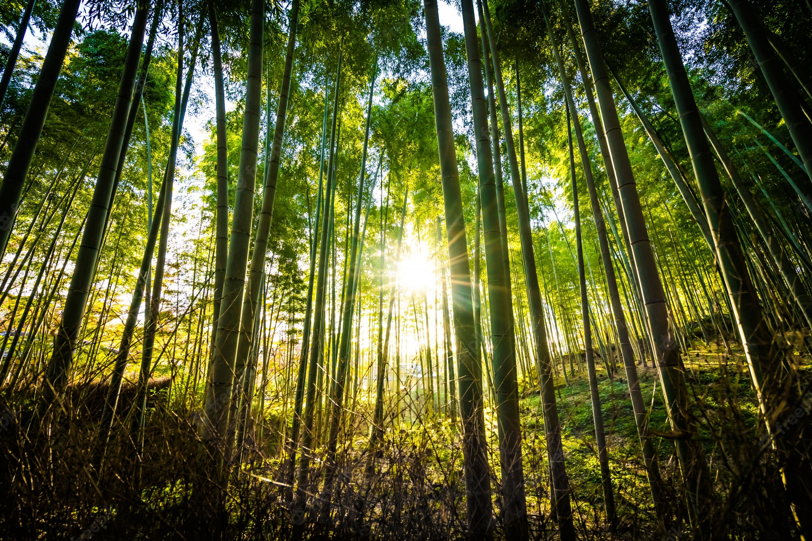
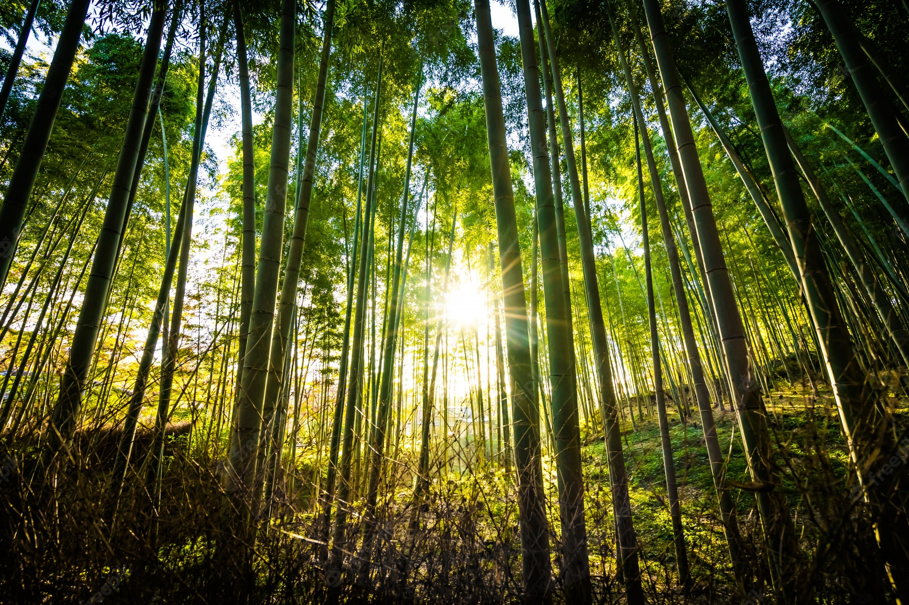
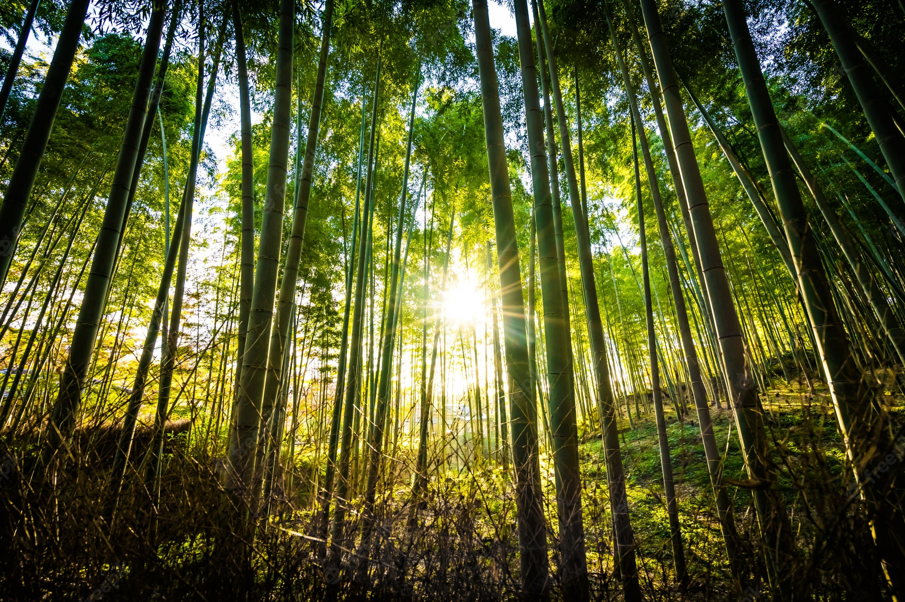
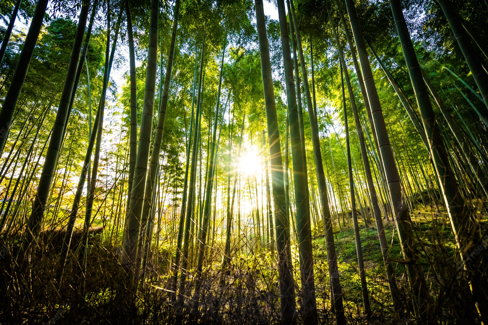

Vacances
 


 

Un paysage est une étendue spatiale couverte par un point de vue. C'est un ensemble interdépendant au fonctionnement, à la mécanique, autonome formé d'une continuité d'éléments sédimentés et dont l'on ne perçoit qu'une globalité. Son caractère « résulte de l'action et de l'interaction de facteurs naturels et/ou humains » selon la convention européenne du paysage du Conseil de l'Europe.